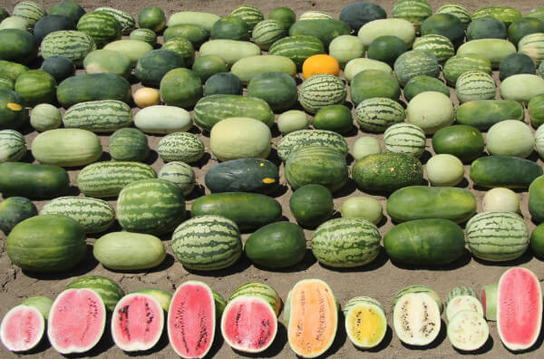

Тема: "Енциклопедія кавуна"
Підготував: студент ФІТ, 4-6,
Сергієнко Владислав

Мало хто знає як правильно вибрати найсмачніший сорт кавуна, де і коли його купити. Якщо раніше кавуни вирощувалися тільки в теплих країнах, то сьогодні селекціонерами виведена величезна кількість сортів, придатних для культивування в середній смузі.
Такі ягоди нітрохи не поступаються за смаковими якостями своїм південним побратимам, але сорти повинні бути тільки з раннім терміном дозрівання.
Кавуни мають унікальний склад, багатий вітамінами і мікроелементами, з соковитою червоною або жовтою м’якоттю, з насінням і без. Вибір досить багатий, адже виведено вже більше 2000 сортів солодкої ягоди, і селекційні роботи тривають. Незважаючи на те, що кавун вважаються традиційно теплолюбивою культурою, існують види, які вирощують навіть в північних регіонах світу. Як правило, кавун вибирають за ступенем солодощі, соковитості, стиглості, аромату і смаку. Чи не помилитися з вибором і купити найсмачнішу кавун, можна лише вивчивши особливості найкращих різновидів і сортів.